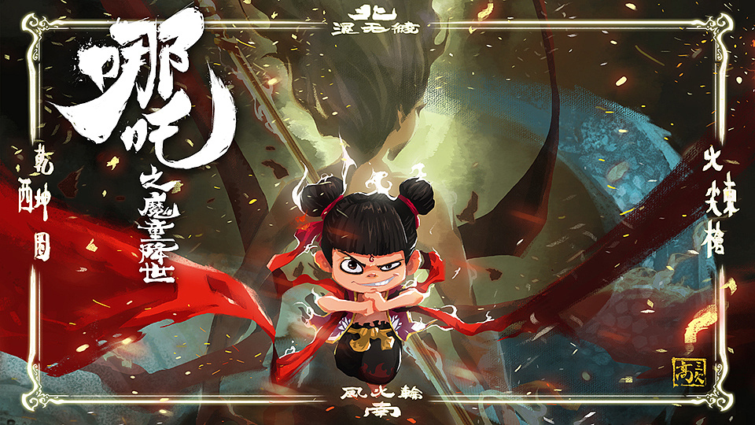
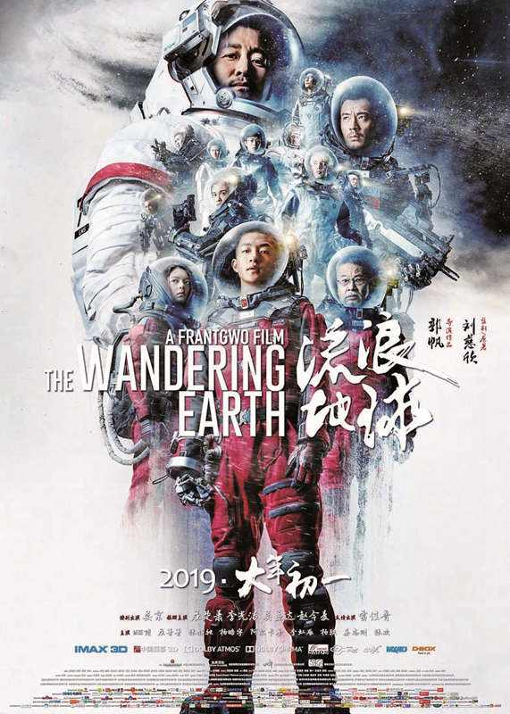

-
《斩赤红之瞳》 一个国家就如同人会逐渐腐朽，走向毁灭的一天，披著人皮的鬼魅魍魉嚣张跋扈四处横行，天若无法制裁邪恶，我等全员职业杀手团将会于黑暗之中给予消逝——帝历 1024 年，出身在因帝国遭受欺压的村庄少年 塔兹米 ，怀着拯救村庄的希望，与青梅竹马共同以..
-
大众评分：
80 -
媒体评分：
80 - 网站评分：
40
《哪吒之魔童降世》是由饺子执导兼编剧，吕艳婷、囧森瑟夫、瀚墨等参与配音的动画电影，于2019年7月26日在中国内地上映。[1] 该片改编自中国神话故事，讲述了哪吒虽“生而为魔”却“逆天而行斗到底”的故事。

-
《流浪地球》 近年来，科学家们发现太阳急速衰老膨胀，短时间内包括地球在内的整个太阳系都将被太阳所吞没。为了自救，人类提出一个名为“流浪地球”的大胆计划，即倾全球之力在地球表面建造上万座发动机和转向发动机，推动地球离开太阳系，用2500年的时间奔往另外一个栖息之地。
 -
大众评分：
65 -
媒体评分：
80 -
网站评分：
40